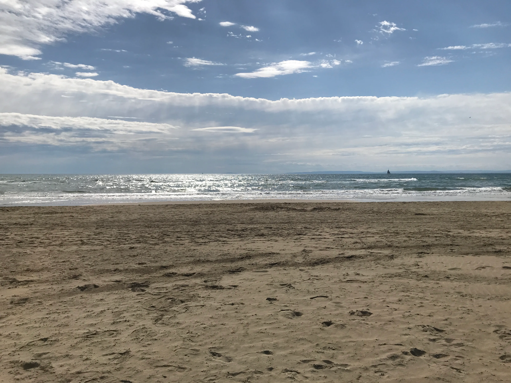
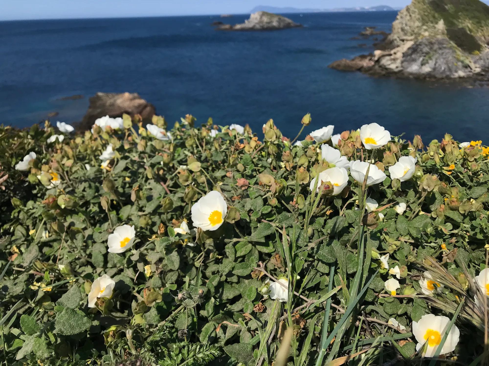
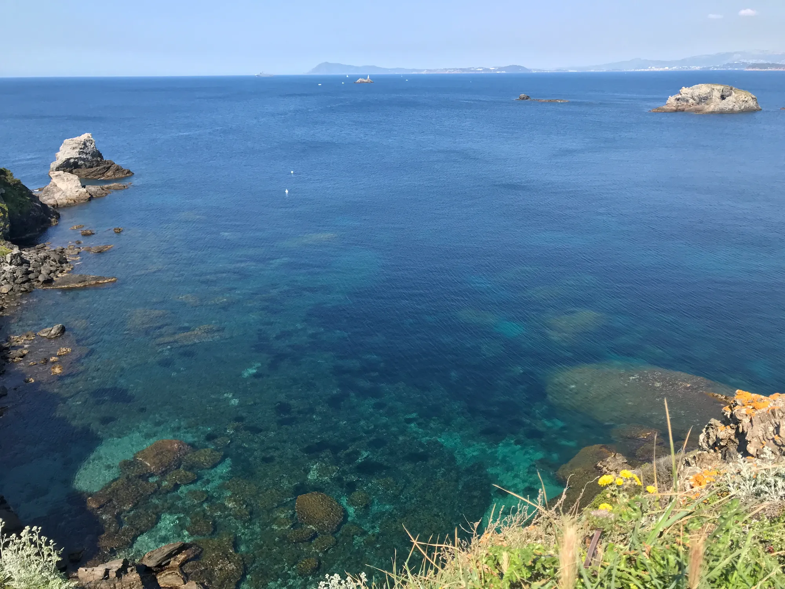
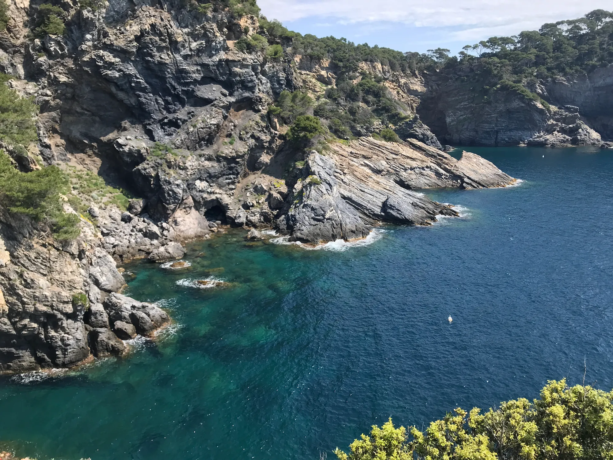

Vacances sur la Côte d’Azur en avril 2025
Pour ces 🌸 vacances de printemps 🌸, nous sommes parties quelques jours sur la Côte d’Azur 🌊 avec la ferme intention de nous baigner !
Le programme était très chargé :
- Jour 1 (samedi 26 avril) : faire la route jusqu’au Grau du Roi, visiter Seaquarium, nous installer au camping puis aller sur la plage de l’Espiguette et visiter le centre ville.
- Jour 2 (dimanche 27 avril) : aller jusqu’à Cassis et, en route, nous arrêter pour faire une randonnée jusqu’à la calanque d’En Vau, nous installer au camping.
- Jour 3 (lundi 28 avril) : faire une randonnée pour voir 3 calanques et visiter le centre ville. Nouvelle nuit au camping.
- Jour 4 (mardi 29 avril) : aller jusqu’à la Presqu’île de Giens, nous installer au camping, faire une belle randonnée sur la côte et buller à la plage, manger au resto.
- Jour 5 (mercredi 30 avril) : aller jusque dans les gorges du Verdon, prendre une navette pour rejoindre le sentier de Blanc Martel dans le canyon et faire la rando de 7 heures avant de rejoindre le camping.
- Jour 6 (jeudi 1er mai) : aller jusqu’à Avignon, visiter le centre ville, le parc, puis aller jusqu’à Orgnac-l’Aven en Ardèche pour visiter la grotte. Dormir au camping ou à l’hôtel, à voir.
- Jour 7 (vendredi 2 mai) : aller jusqu’à Thueyts, faire la grande rando du Pont du Diable, puis reprendre la route pour rentrer.
Les choses ne se sont pas exactement passées comme prévu…
Jour 1
La route était très longue, plus que ce que le plan établi sur Maps indiquait au départ.
Nous avons fait plusieurs escales et avons mangé au KFC de Pérols, vers Montpellier.
🌊 Nous sommes arrivées au Grau du Roi en début d’après-midi et sommes directement allées visiter 🪼 Seaquarium 🪸. Cet endroit pourrait être bien plus sympa si les gens étaient plus respectueux les uns des autres, mais aussi vis à vis des aquariums et des animaux. Les couloirs et cloisons renforcent le bruit. Il y a moyen de faire ça mieux, je pense. Toute l’exposition concernant la pollution plastique, etc, avait des airs affreux d’art moderne. Je n’ai pas aimé. Tout comme les différents présentoirs à lire ou les écrans omniprésents pour occuper les enfants.
J’ai trouvé quelques aquariums magnifiques et il y avait beaucoup de poissons que je ne connaissais pas. Ils sont extraordinaires. L’effet grossissant des vitres (ou de l’eau elle-même, je ne sais pas) donnait parfois l’impression que les poissons sortaient tout à coup pour venir vers nous ! Le tunnel sous l’eau fait aussi son petit effet quand la grosse tortue ou les requins passent au-dessus de nos têtes. C’était superbe.
💖 J’ai eu un gros coup de cœur pour un joli requin couleur sable à pois noirs, le requin zèbre. Également pour les otaries qui faisaient des pirouettes sous l’eau. J’ai bien aimé passé ma tête sous le hublot pour regarder les poissons au milieu de leur bassin, comme si j’y étais !
Je n’ai pas pris de photos, car les vitres étaient très rayées et les eaux parfois trop sales. On y aurait rien vu.
Nous nous sommes ensuite installées au Camping du Soleil. L’accueil était plutôt froid. Par contre, notre emplacement était cool (le seul emplacement pour tente cool de tout le camping apparemment, car il y avait énormément de caravanes, mobilhomes etc). Nous étions derrière une petite haie, face à un étang, au bord du chemin de balade. Par contre, ils sont maniaques de la caméra là-bas, il y en avait partout dans le camping ! Et il faut des cartes magnétiques pour entrer et sortir du camping ET des sanitaires. Le gros délire. Bon, le cadre était cool, mais les moustiques l’ont changé en enfer. Heureusement qu’il y avait des chauves-souris le soir pour les dévorer un peu 🦇. Mais nous avons quand-même été piquées bien plus que notre compte.
Nous avons pu aussi nous balader jusque sur la plage de l’Espiguette, visiter le port et le centre ville. C’était très agréable. Les flamants roses sont passés au-dessus de notre tente 🦩.
Jour 2
Il a plu durant la nuit et nous sommes reparties du Grau du Roi sous les gouttes. Ce n’était pas facile de ranger la tente dans ces conditions.
Nous avons ensuite roulé vers Cassis pour rejoindre le point de départ de la randonnée pour accéder à la Calanque d’En Vau. La balade était superbe, la calanque magnifique. Nous avons pu nous baigner, c’était très agréable. L’eau était bleue, nuancée, fraîche, parfaite.

Sur le retour jusqu’à la voiture, il s’est mis à pleuvoir non-stop. Il n’était pas envisageable de nous rendre au camping. Nous avons trouvé une chambre d’hôtel au Jardin de Cassis et nous sommes allées manger des moules frites au restaurant Le Perroquet, sur le port, un régal (quoique un peu trop salées). La chambre d’hôtel était bien chère pour ce que c’était, avec condensation et moisissures aux fenêtres, mais nous avons pu dormir au sec et sécher nos affaires.
Jour 3
Nous avons décidé de faire la grande balade des calanques, puis de partir directement vers la Presqu’île de Giens, car la météo annonçait encore de la pluie à Cassis pour la fin de journée.
La randonnée était exceptionnelle, magnifique et épuisante. La calanque de Port Miou est jolie, mais il y a les bateaux. La calanque de Port Pin est extraordinaire. Nous avons pu de nouveau profiter de la baignade (enfin, pas moi, j’étais un peu frileuse). Il y avait un peu plus de monde, mais on s’est bien amusées.
Nous en avons profité pour refaire un tour du centre ville sous le soleil, cette fois, et déguster une excellente glace lavande miel et violette 🍦. Un vrai régal.
Nous avons ensuite repris la route vers Giens. Le camping Olbia est perdu tout au bout de la presqu’île. La route semblait interminable et le paysage décevant au premier abord. Tout est très urbanisé. Nous avons à peine aperçu les salins et pas un seul oiseau migrateur, alors que l’endroit est censé être une réserve ornithologique.
Une fois sur place, nous étions exténuées. Nous nous sommes installées, avons été dévorées par les moustiques et avons passé une nuit un peu agitée. 🦤 Là-bas, les goélands sont très excités et font la fiesta toute la soirée, ainsi qu’au petit matin, accompagnés d’autres oiseaux mystérieux et de crapauds ! Sans parler des hélicoptères…
À ce stade, j’étais complètement cassée. Dormir dans la tente est difficile, et les balades intensives ont réveillé ma vieille douleur à la hanche, qui s’est propagée sur toute la jambe droite, me faisant boiter et attaquant la gauche par la même occasion.
Jour 4
Dernière balade ce jour, avant de rentrer à la maison. Le programme de la fin de semaine est trop intense, je savais que je ne pourrais pas marcher tout ça.
Nous sommes donc parties tranquillement nous balader sur le sentier du littoral pour faire une partie du tour de l’île. Cadre exceptionnel, vue splendide, plages et baignades bienvenues. Nous nous sommes bien amusées. Nous avons pu aussi profiter d’un bon plat de moules frites au restaurant du camping et nous avons couru sur la plage ensuite pour voir, à la dernière seconde, le soleil se coucher sur la Méditerranée. C’était parfait.
  Jour 5
Nous avons roulé toute la journée sous une chaleur étouffante. J’ai attrapé des coups de soleil à travers les vitres de la voiture ! La route était bien longue. Nous avons eu droit à un contrôle de gendarmerie… à 5 minutes de la maison !
🤩 Ce que j’ai le plus aimé dans ces vacances :
- Les nuances de bleus dans la mer, parfois azurée, parfois turquoise, parfois marine.
- La végétation si particulière.
- Le requin zèbre qui tournoyait toujours sur le même chemin et repassait sans cesse devant nous.
- La glace à l’ombre d’un pin, sur le port de Cassis.
- Le bonheur de ma Douceur plumée qui s’amusait bien.
😩 Ce que j’ai le moins aimé dans ces vacances :
- La route, toujours bien plus longue et éprouvante que ce que j’imaginais (il fallait rouler tous les jours en fait !).
- Les moustiques.
- Être cassée dans la tente.
- Farfouiller sans cesse dans les affaires, dans la voiture.
Je me note, pour l’organisation des prochaines vacances, qu’il faut impérativement :
- Diminuer le nombre d’affaires qu’on emporte (pas besoin d’emporter autant de nourriture, par exemple).
- Rester 2 nuits minimum au même endroit pour éviter la fatigue de la route et du remballage des affaires de camping.
- Rapprocher les étapes (distance moins longue entre 2 arrêts) ?
- Prévoir un programme plus léger (alterner marches intenses et balades tranquilles).
- Avoir de quoi mieux dormir dans la tente (un matelas ?).
Il serait peut-être pas mal aussi, pour certains endroits à visiter, d’essayer le train et l’hôtel. À méditer…